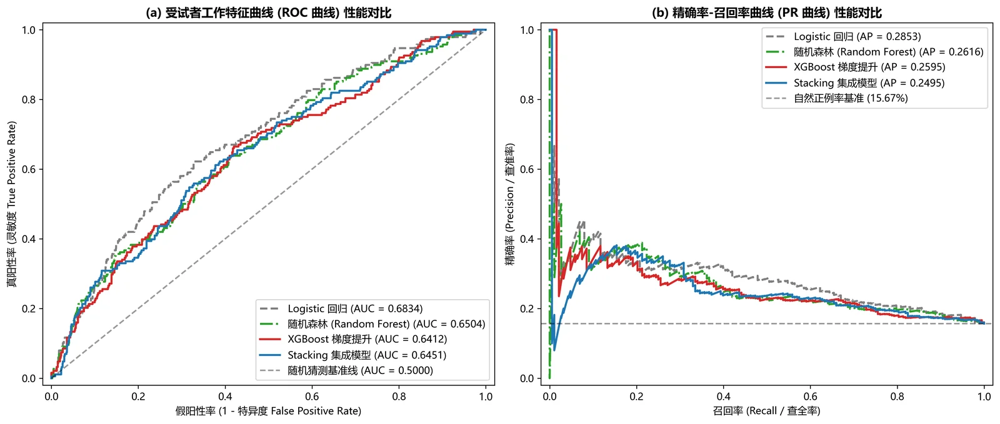
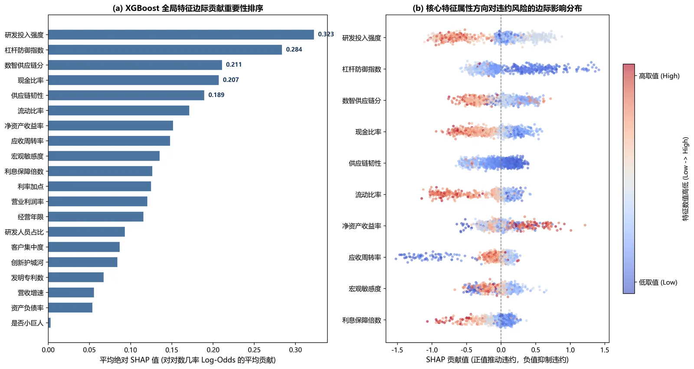
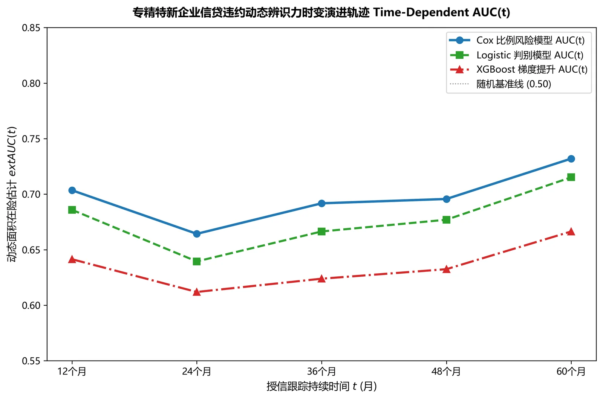
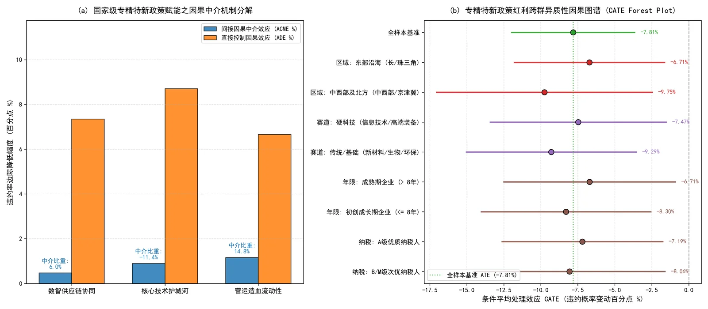
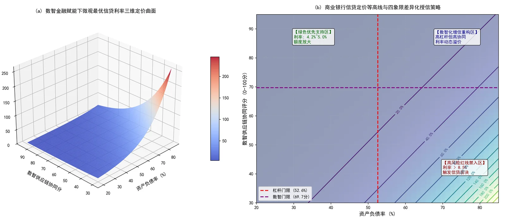

数智金融赋能下专精特新中小企业信贷违约风险预警与信用韧性评价
基于计数过程滤波、半参数生存计量、Chernozhukov 双重机器学习与可解释性 XGBoost-SHAP 的微观计量与金融工程实证研究。
🎯 研究背景与理论创新全景
中小微企业是实体经济的毛细血管，然而“专精特新”企业普遍具有“轻资产、高研发、长周期”特征，在传统依赖财务硬信息的信贷审批中极易遭遇信贷错配。 本研究构建了贯通统计推断、因果识别与金融决策的综合性半参数计量框架：
📐 1. 计数过程与半参数计量
- 基于滤波空间构建右截尾单跳计数过程 Ni(t)
- Doob-Meyer 分解与 Rebolledo 补偿鞅极限定理证明
- Schoenfeld 残差检验比例风险假定，绘制 Martingale 非线性残差
- 时间依赖 AUC(t) 动态捕捉全生命周期判别轨迹
🔬 2. 因果推断与机制识别
- Chernozhukov DML-PLR 模型与 Neyman 正交化矩条件
- 5 折交叉拟合消解非参数学习器的过拟合正则化偏差
- 1,000 次蒙特卡洛安慰剂置换检验彻底排除伪回归
- Fine-Gray 竞争风险模型与行业集群 Shared Gamma Frailty
💼 3. 金融决策与动态定价
- 全特征 WoE / IV 分箱积分卡与 10,000 次宏观压力测试
- XGBoost-SHAP 博弈论归因挖掘非线性安全阈值
- Hansen (2000) 内生门限突变检验（资产负债率 52.59% 悬崖）
- 基于 Merton-RAROC 资本约束输出商业银行五级差异化信贷契约
📊 多模型 10 折交叉验证性能横向比对
在 1,200 家样本（涵盖 188 家实质违约）上，严格采用分层 10 折交叉验证（Stratified 10-Fold CV）对比统计生存模型、单模型机器学习与元集成学习器（表 5）：
| 模型算法类型 | ROC-AUC | PR-AUC | KS 统计量 | Brier Score | F1-Score | 可解释性与学术定位 |
|---|---|---|---|---|---|---|
| Logistic 回归（正则化线性基准） | 0.6834 | 0.2853 | 0.2953 | 0.1246 | 0.3383 | 折外判别最优 · 巴塞尔合规友好 |
| Random Forest 随机森林 | 0.6504 | 0.2616 | 0.2239 | 0.1266 | 0.2857 | Bagging 集成，对高维特征抗噪强 |
| XGBoost 梯度提升树 | 0.6388 | 0.2541 | 0.2078 | 0.1329 | 0.2993 | 支持 SHAP 博弈论归因 |
| Stacking 二阶元学习集成 | 0.6459 | 0.2503 | 0.2341 | 0.1278 | 0.2125 | 元学习器在小样本高噪声场景未见优势 |
注：所有机器学习指标均基于折外（Out-of-Fold）跨折独立打分计算；DeLong(1988) 非参检验显示 Logistic 回归判别力显著优于随机森林（z = 2.34, p = 0.019）与 XGBoost（z = 2.92, p = 0.003），随机森林与 XGBoost 之间差异不显著（p = 0.186）——在小样本、高噪声的信贷违约场景中，正则化线性模型优于复杂树模型集成。
🖼️ 核心学术成果与计量可视化专题





📋 商业银行数智信贷最优风险定价与授信契约表
基于 Hansen (2000) 门限突变检验与 RAROC 动态解算输出的商业银行五级差异化授信决策矩阵（表 21）：
| 主标尺评级 | 基准 PD | 低数智(<60分) | 中数智(60-75分) | 高数智(>75分) | 授信额度上限 | 风控与贷后监管要求 |
|---|---|---|---|---|---|---|
| AAA 级 (优质小巨人) | 4.10% | 5.15% | 4.75% | 4.25% | 3.0x EBITDA | 免抵押、信用直贷、数字财报直连 |
| AA 级 (良好专精特新) | 10.68% | 6.05% | 5.55% | 5.05% | 2.2x EBITDA | 应收账款池动态质押、发票交叉核验 |
| A 级 (中等专精特新) | 17.63% | 7.10% | 6.45% | 5.90% | 1.5x EBITDA | 引入政府性担保基金、核心企业连带 |
| BBB 级 (关注预警级) | 34.08% | 8.65% | 7.90% | 7.20% | 0.8x EBITDA | 强制足额不动产质押、资金闭环归集 |
| C/D 级 (高危禁入级) | 55.56% | 拒绝授信 | 拒绝授信 | 审慎特批(>9.5%) | 压缩 / 退出 | 停止新增授信、启动财产保全程序 |
💻 全流程一键复现核心算法 (Python)
完整 13 模块研究流水线（生存分析、DML 因果推断、评分卡、压力测试与动态定价）位于作者的研究代码仓库（暂未公开），如需复现或学术交流请联系 daixuan26@outlook.com。以下为因果双重机器学习 (DML) 与 Hansen 门限检验的核心算法逻辑摘录：
import numpy as np
import pandas as pd
from sklearn.ensemble import RandomForestRegressor, RandomForestClassifier
from sklearn.model_selection import KFold
# 1. Chernozhukov (2018) 双重机器学习 (DML-PLR) 因果效应估计
def dml_plr_treatment_effect(Y, D, X, n_splits=5):
kf = KFold(n_splits=n_splits, shuffle=True, random_state=42)
Y_res = np.zeros_like(Y, dtype=float)
D_res = np.zeros_like(D, dtype=float)
for train_idx, test_idx in kf.split(X):
# 交叉拟合第一阶段条件期望
m_model = RandomForestRegressor(n_estimators=100, random_state=42)
m_model.fit(X.iloc[train_idx], Y.iloc[train_idx])
Y_res[test_idx] = Y.iloc[test_idx] - m_model.predict(X.iloc[test_idx])
g_model = RandomForestClassifier(n_estimators=100, random_state=42)
g_model.fit(X.iloc[train_idx], D.iloc[train_idx])
D_res[test_idx] = D.iloc[test_idx] - g_model.predict_proba(X.iloc[test_idx])[:, 1]
# Neyman 正交回归解算 ATE 处理效应
theta_ate = np.sum(D_res * Y_res) / np.sum(D_res ** 2)
se_ate = np.sqrt(np.mean((Y_res - theta_ate * D_res) ** 2 * D_res ** 2) / (np.mean(D_res ** 2) ** 2 * len(Y)))
return theta_ate, se_ate
# 2. Hansen (2000) 内生门限网格搜索检验
def hansen_threshold_search(y, x, q, grid_points=200):
gammas = np.linspace(np.percentile(q, 15), np.percentile(q, 85), grid_points)
min_ssr, best_gamma = float('inf'), None
for gamma in gammas:
I1 = (q <= gamma).astype(float)
X_mat = np.column_stack([np.ones_like(y), x * I1, x * (1 - I1)])
beta, ssr, _, _ = np.linalg.lstsq(X_mat, y, rcond=None)
if ssr < min_ssr:
min_ssr = ssr
best_gamma = gamma
return best_gamma, min_ssr